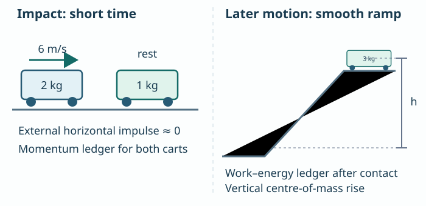

Core1A · Which system, which interval?
A1 · Observe
When two carts collide, both change speed in a short time. If they latch, some motion energy becomes deformation, sound and thermal energy. A later climb or braking interval changes the remaining kinetic energy again. We must never use one conservation equation across every stage of the story.
A2 · Prerequisites
Choose an inertial frame and a positive horizontal direction. Momentum p=mv is a signed vector component in kg·m/s. Kinetic energy K=½mv² is nonnegative in joules. Impulse is force integrated over time (N·s=kg·m/s); work is force along displacement (N·m=J). Weight mg acts downward. For a rise through vertical height h, gravitational potential energy increases by mgh.
A3 · Why system momentum can remain constant
During contact, the force of cart A on B and the force of B on A are equal and opposite. Integrating over the same contact interval gives opposite impulses. Those internal impulses cancel when we add both momentum changes; each cart alone can change momentum. The system's horizontal momentum can change only through external horizontal impulse. The time interval matters: a weak force over a long braking interval is not negligible simply because it was negligible during a brief collision.
A4 · Derive the two ledgers
For a pair of fixed masses, Δ(p₁+p₂)=Jext,x. If the pair latches and Jext,x≈0, m₁u₁+m₂u₂=(m₁+m₂)V. Every velocity has a sign in the chosen x direction. Both sides have units kg·m/s. Sticking implies a common final velocity; it does not imply unchanged kinetic energy.
For later motion, take the pair as one body. The work–energy theorem gives Kf−Ki=Wnet. On a smooth climb to rest, ½MV²=Mgh. On a level rough surface to rest, ½MV²=μMg s for positive travelled distance s. Both sides are kg·m²/s². If there is a substantial external impulse during impact, keep Jext,x; if energy is lost during climb, include that work instead of using the smooth equation.

A6a · Foundation: opposite impulses
A 2 kg cart travels right at 6 m/s and receives a leftward impulse of 4 N·s. Initial p=+12 kg·m/s; final p=+8 kg·m/s; final v=+4 m/s. If the other cart supplied that impulse, its change of momentum is +4 kg·m/s. Neither cart separately conserves momentum.
A6b · Connected: latching pair
The guide diagram uses a 2 kg cart travelling right at 6 m/s and a stationary 1 kg cart. The initial total momentum is 12 kg·m/s, so the joined 3 kg pair travels at +4 m/s. Initial K=36 J; final K=24 J. The 12 J difference becomes other energy forms. Independent check: ½(2×1/3)×6²=12 J.
A6c · Advanced: a separate smooth climb
A joined 3 kg trolley already moving at 4 m/s reaches a smooth ramp. Its energy at the entrance is 24 J. With g=10 m/s², the vertical rise before momentary rest is h=24/(3×10)=0.80 m. Doubling mass at the same speed doubles both kinetic energy and weight; height is unchanged. The ramp length is irrelevant when there is no friction. If it climbs with energy loss of 6 J, only 18 J becomes potential energy and height becomes 0.60 m.
Explore: change the incoming direction
In an independent example, a 2 kg cart approaches right at 4 m/s. Vary the signed velocity of a 1 kg partner before latching. The graph reports total initial momentum, common velocity and impact energy loss; it does not model the protected task.
A7 · Repair the wrong model
Suppose a learner conserved kinetic energy through the 2 kg–1 kg sticking collision. Setting 36=½(3)V² predicts V=√24≈4.90 m/s. But this gives momentum ≈14.7 kg·m/s, not the initial 12. With negligible external impulse that is impossible. The first divergence is the choice of conserved quantity, not arithmetic. Replace it with the system momentum ledger; use the energy ledger only on the later appropriate interval.
A8 · Changed conditions
With the same initial carts, if an external brake supplies −3 N·s during contact, total final momentum is 9 kg·m/s and common speed is 3 m/s, not 4. Conversely if the contact is elastic, the carts do not latch and one common velocity cannot be assumed. A zero-friction horizontal continuation cannot stop a moving pair without another force.
A9 · Synthesis and independent check
Decide the system, frame, contact interval, and external impulse before choosing a conservation law. Then choose a separate energy ledger for the later interval. A pair is moving together just after contact; can its later stopping distance determine the incoming momentum if the friction is unknown? Write an explanation before opening the model.
Compare conceptual check
No. The stopping relation contains both speed and friction coefficient; a distance alone does not determine the joined speed. Even if the speed magnitude were known, the direction must be observed to find signed momentum. Additional information is required to reconstruct the incoming state.
Core1B · fresh challengeAuthored Core2 checkOriginal source checkpoint